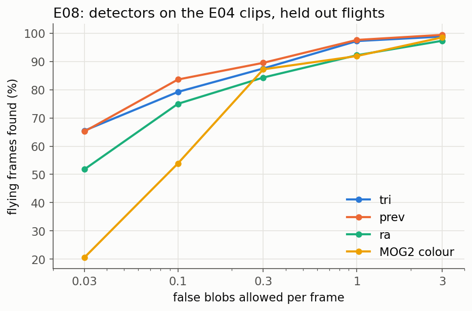
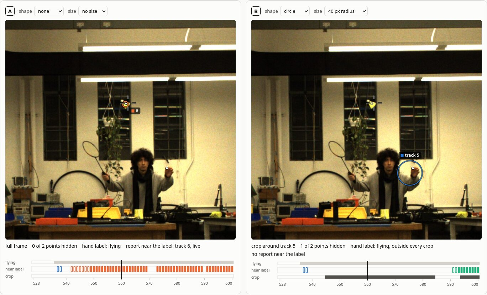
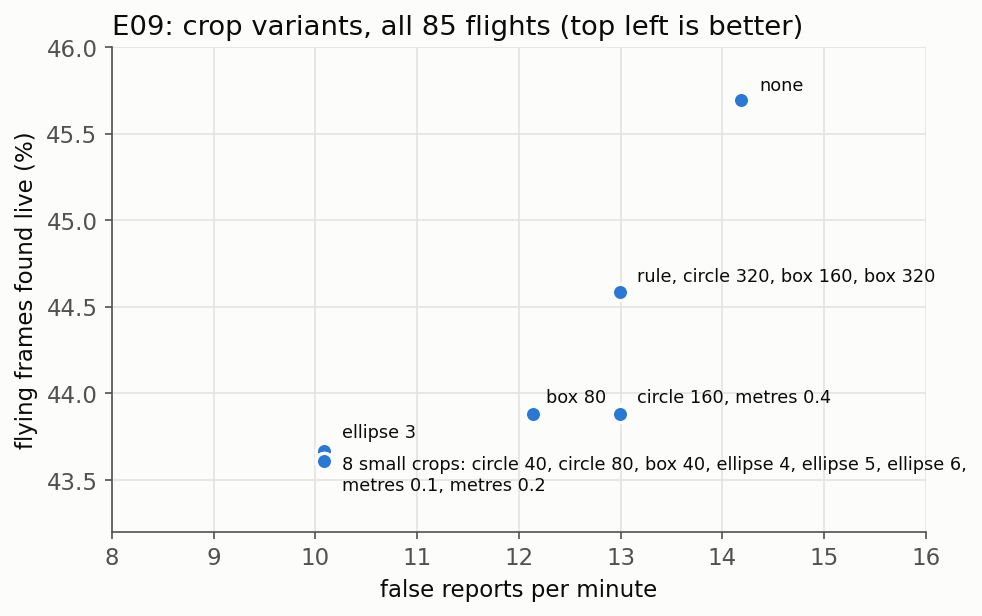
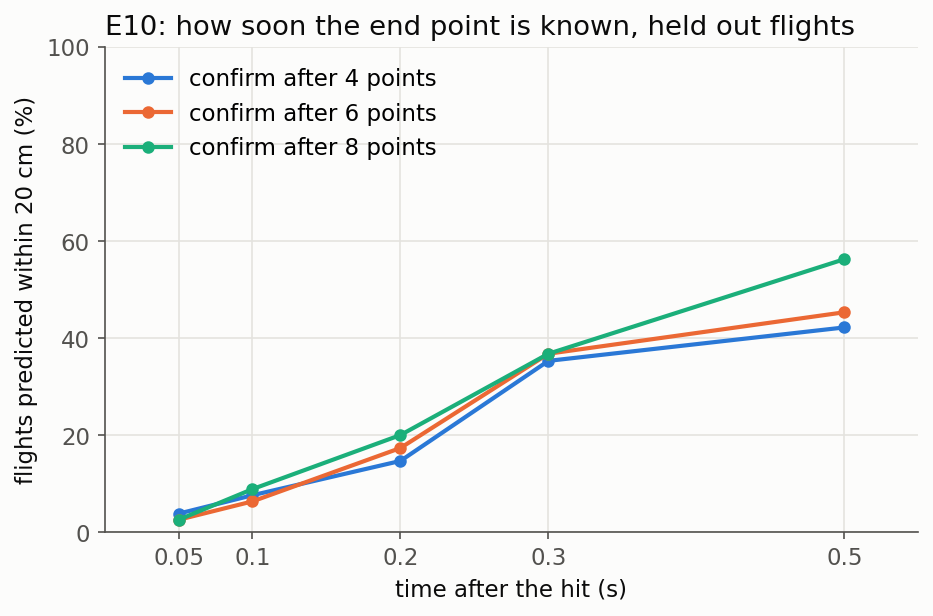
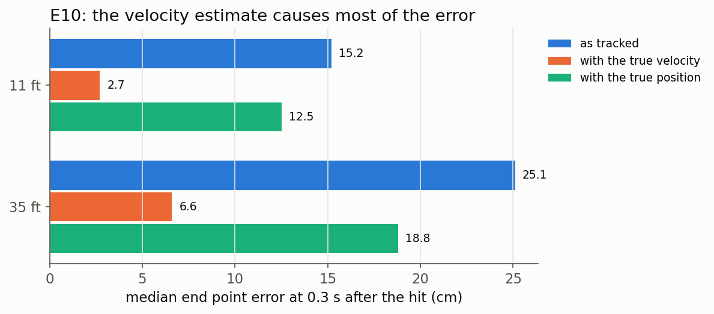
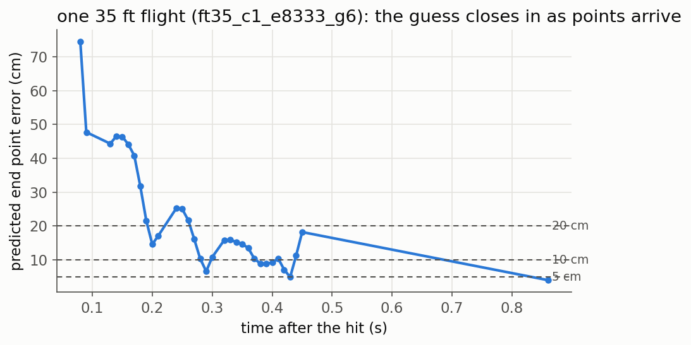

baddy-bot vision pipeline
Vision experiments, 13 October 2026
Three experiments, all on the 13 labelled E04 clips (85 flights at 11 and 35 ft).
The short version
- The detector is fine.E08
- The tracker's prediction is the limit.E10
- The velocity estimate is the next thing to fix.E10
jtandjung's MOG2 detector, on our clips
What I did
Ran his scripts from branch origin/mog2_experiment, unchanged, on the left camera of the 13 labelled E04 clips. MOG2 is OpenCV's background subtractor. It was scored against ra, prev and tri at the same budgets of false blobs per frame.
What came out
- At 0.3 false blobs per frame, colour MOG2 ties: 87.2% of flying frames found, against 87.5% for
triand 89.5% forprev. - At 0.1 it falls far behind: 53.9% (42.3% at 35 ft) against 79.2% for
tri. - The OpenCL path on your RTX 2070 took 5 ms per frame (upload and download included) against 13.5 ms on the CPU, with the masks matching to about a pixel.
- Parked until a busy rally clip is labelled. His clip had players and rackets moving in view, and there MOG2 led
ra76.5% to 65.3%; ours had one thrower.

Crop around the predicted shuttle
What I did
Your idea: while a track is confirmed, search only a crop around where the tracker expects the shuttle, in both cameras, and go back to full frames when the track dies. I simulated it from the saved tri blob tables through the 3D tracker on all 85 flights, with circles, boxes, ellipses from the tracker's predicted error, and circles sized in metres.
What came out
- About 29% fewer false reports (14.2 down to 10.1 per minute) for about 2 points fewer frames found (45.7% down to 43.6%).
- Shape and size barely matter: the 40 and 80 px circles, the 40 px box, the ellipses and the 10 and 20 cm circles all land on 43.6 to 43.7% at 10.1 false reports per minute.
- Almost no speed gain: about 10% fewer pixels on average and none on the slowest frame, because a track is confirmed in under 10% of these clips' frames.
- Its main failure is a track that latches onto your raised hand. The crop follows the hand and the tracker goes blind to the real shuttle; in the worst flight the shuttle was picked up again 49 frames late.


Confirm sooner, drop quiet tracks
What good means now
How early and how close the tracker predicts where each flight ends. Each flight is scored within 5, 10 and 20 cm of its fitted end point, at 0.05 to 0.5 s after the hit, with false reports held at 15 per minute or fewer.
What I did
Ran a grid of 864 tracker settings on the 79 flights with a fitted end point: confirm a track after 2, 3, 4, 5, 6 or 8 points, and drop a confirmed track after 3, 6 or 12 frames without a reportable point, or never. Settings were picked on four folds of flights and scored on the fifth.
What came out
- Confirming on fewer than 8 points makes it worse: 32 to 37% of flights within 20 cm at 0.3 s, against 37 to 43% for 8, and 27 false reports per minute at 2 or 3 points.
- Dropping a confirmed track after 3 frames without a reportable point only trims false reports, from 14.5 to 11.1 per minute.
- 0.3 s after the hit, the median end point error is 25 cm at 35 ft. Most of it comes from the velocity, which is 0.43 m/s off; with the true velocity the error would be about 7 cm.



What comes next
- A better velocity: retune the filter's model slack (
sig_a, now 2 m/s²), or fit the track so far with the drag plus gravity physics, the wayflightfit.pydoes offline. - A to-scale robot simulation with the year 1 spec (2.36 m/s² and 2.95 m/s, triangle profile), chasing the latest prediction from rings of start offsets, with the race ending at the last-seen point.
- Harder data: 35 ft clips 6 to 8, and a two-player rally.